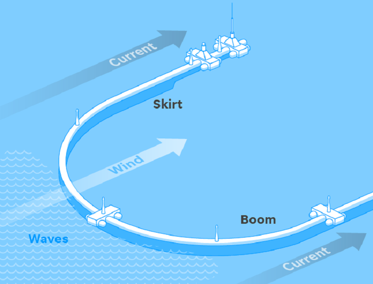
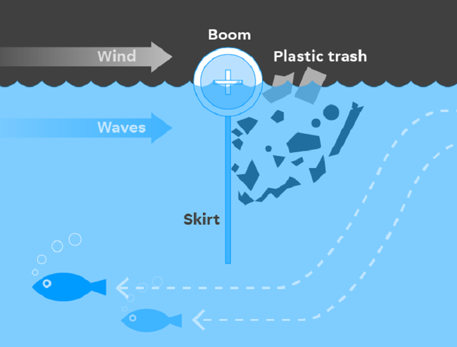
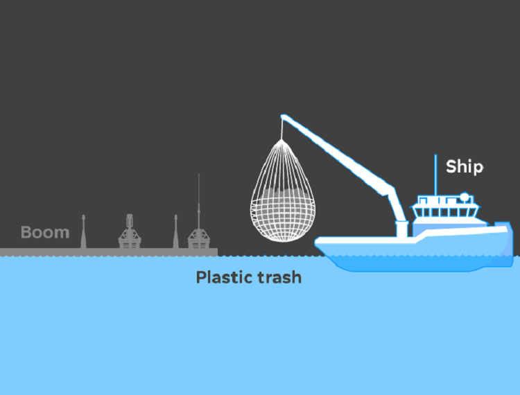
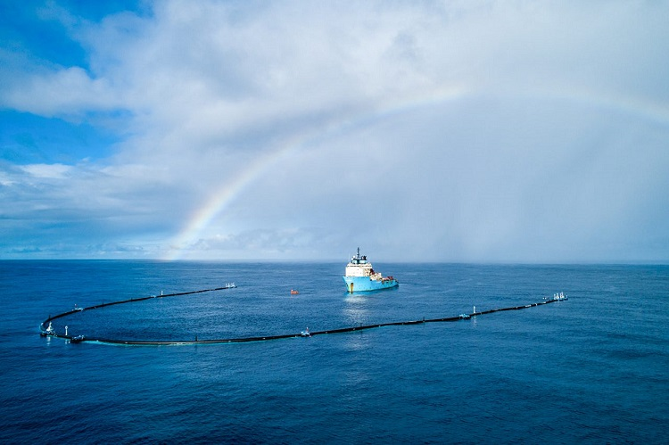
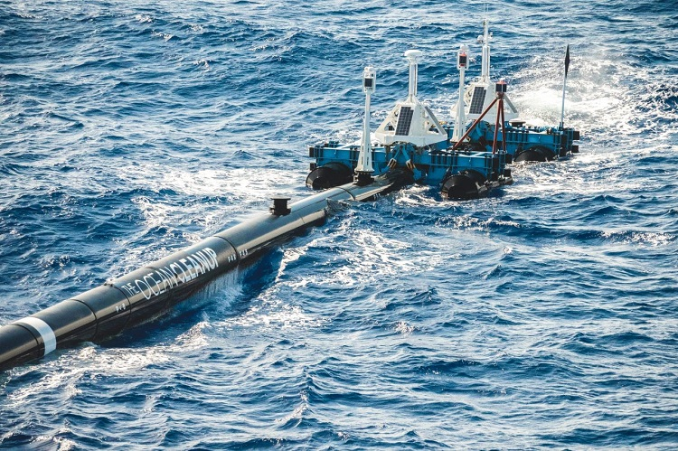
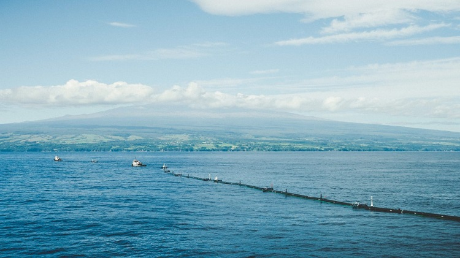

It all started in 2013, Boyan Slat , then 16 years old, scuba diving in Greece, was alarmed and horrified by the fact that the amount of plastic waste he saw while diving was much higher. relative to the number of living organisms. Ever since he witnessed this phenomenon with his own eyes, he had cherished a dream of being able to clean up the garbage in the seas.
Then, Boyan Slat came up with the idea of a passive garbage collection system that could work by taking advantage of ocean currents to concentrate the amount of waste in a fixed location. After a period of incubation, presentation, calling,..., finally, his project idea was funded, enabling him to turn his childhood dream into reality.
In 2013, young entrepreneur Boyan Slat, then 19 years old, started the Ocean Cleanup project and started researching and manufacturing System 001 - the project's first generation of ocean waste cleaning equipment.
The idea behind this invention is quite simple but extremely clever. The system is made up of large floats that are joined together into a system about 600 meters long. Underneath this buoy system is mounted a net up to 3 meters deep. This device will then be placed in the direction perpendicular to the sea current with the purpose of taking advantage of the water power to collect waste into the heart of this device. This operation process consumes almost no energy. And about once a month, a boat will come to pick up the accumulated waste and bring it back to the mainland for recycling.
With the feasibility and efficiency of this device, the project team is testing the System 002 version and is working on the next version of System 003 to replicate the project and aim for a cleanup. 90% of the litter in the oceans globally by 2040.
  
  
The annual Earth Day will be 50 years old on 22nd April 2020!
Every year, Earth Day is celebrated as one of the greatest civic events. It stands for the awareness of environmental problems and a sustainable lifestyle. This year the initiators want to flood the digital world under the slogan “climate action” and reach as many people as possible with livestream discussions, a global digital wave and 24 hours of action.
So make the most of your time at home, join Earth Day from our couch, and most importantly, invite friends and family to join in too! All events and information can be found here:
Two days later, on 24th April 2020, a broad alliance of social, environmental and climate protection organisations will support the Fridays-for-Future -movement’s third global climate strike. Since climate protection demonstrations with several million people are currently not possible, the events, actions and demonstrations will be organised purely virtually for the first time. But even if Earth Day and climate strike can only take place digitally, the demands are perhaps more important than ever. Not only is environmental destruction a factor that accelerates pandemics, but the current crisis with Covid-19 also shows how important it is to listen to science. Because: If we all – à la #wearebettertogether – work on solutions and strategies to overcome crises and are ready to act decisively, we can set a lot in motion and create a lot! #FightEveryCrisis
You can find out how you can take part on the Fridays-For-Future page or on Klima-streik.org. Very important – spread the word with the hashtag #netzstreikfürsklima!